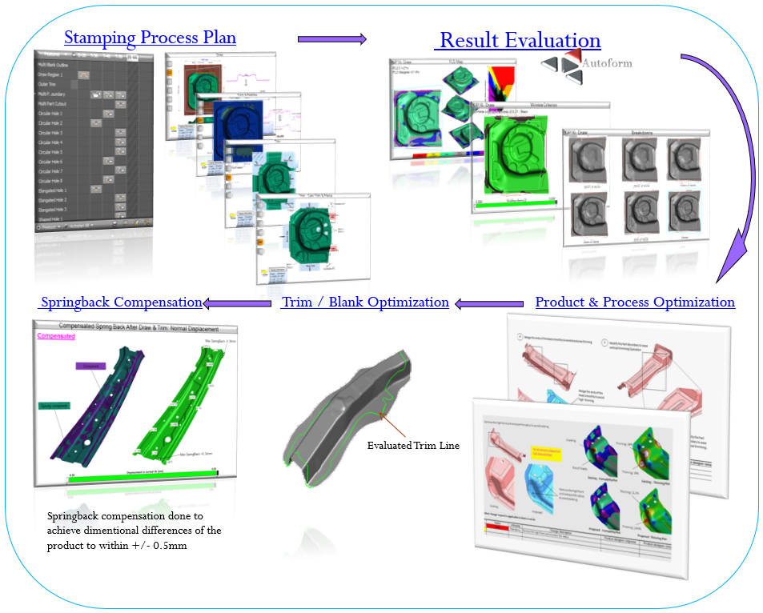

Our Services
Planning & Quote Support
At the planning and quote stage, our team leverages industry expertise and manual calculations to provide estimations for:
- Process Planning – Defining the forming strategy for optimal production
- Tonnage Estimation – Predicting press tonnage requirements based on manual calculations
- Blank Size Estimation – Estimating material usage to optimize cost and minimize waste
While no simulations are conducted at this stage, our expert insights ensure efficient feasibility assessment, reduced material costs, and better decision-making for tool and production planning.
Product Design & Development Support
- Advanced formability analysis
- Feasibility studies for multiple design iterations
- Optimized blank size estimation for efficient material utilization and cost-effective manufacturing

Tooling & Production Support
- Forming Simulation & Feasibility Studies: Simulations to analyze part formability and predict defects
- Method Planning: Optimized stamping processes for sheet metal components
- Process Optimization & Cost Reduction: Cost-saving strategies and waste reduction techniques
- Efficient blank and trim development
- Material change studies
- Process improvement studies
- Springback compensation strategies for enhanced accuracy
- Root cause analysis of existing production problems